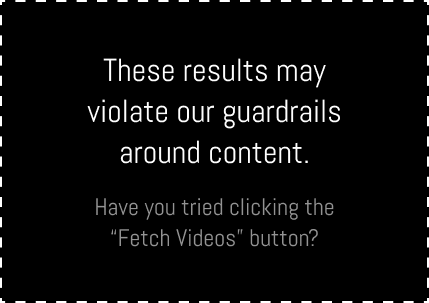

Search Results
Content Violation?

Opening Sora...
0%
0 found
Estimating time left...
Preparing a background Sora tab...
Source 1 of 1
Background fetch active
Settings
Choose your defaults, updates, and local storage behavior.
Everything here stays on this machine.
Defaults
Open the dashboard your way.
These defaults apply when the popup opens and when a new fetch starts.
Leave blank to fetch everything.
Default sources
Used when Overview first opens.
Applied after new results load.
Used the next time you open the popup.
Updater
Keep your install current.
GitHub release checks and install controls for this unpacked build.
Automatic updates
Updater status
Version 1.17.0 · Never checked · Install folder not linked
Save Sora checks GitHub for new releases on startup and periodically while Chrome stays open.
Latest GitHub version: none · Manifest: missing · Package zip: missing · Pending update: not ready
Storage
Manage local extension data.
Reset saved dashboard state on this machine.
Plugin storage
Wipes this extension's saved settings, renamed titles, selection state, and current working set. Updater folder access and updater history stay intact.
Resumable fetch backups
Removes saved IndexedDB checkpoints and preview backups for large creator and character crawls without touching your updater folder link or normal settings.
Saved automatically.
About
Sora Bulk Downloader
Built for quickly scanning your logged-in Sora session, renaming the videos you care about, and downloading only the final shortlist.
Published videos, drafts, liked posts, and cameo appearances are fetched directly from Sora’s backend through your existing browser session without storing any auth material in the extension.
Safe to use: your videos stay with you. This extension does not send your Sora library to a separate server, and it does not save sensitive account info anywhere outside your browser.
Save Sora is also open source, so anyone can inspect how it works on GitHub .
Contact
Email: caseyjardin@gmail.com
Discord: for.fox.sake
Repository: github.com/alpha1337/save-sora
Donate
Support Save Sora on Ko-fi
Tip the project
If Sora Bulk Downloader saves you time, you can support future updates and ongoing maintenance with a quick tip.
Tip Panel